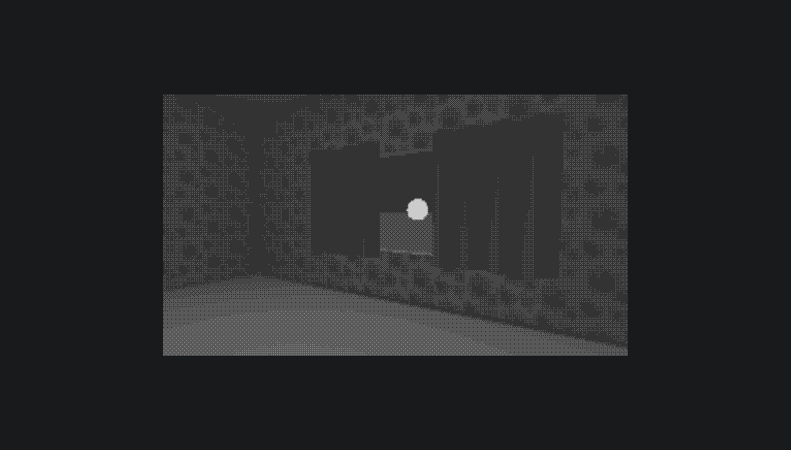
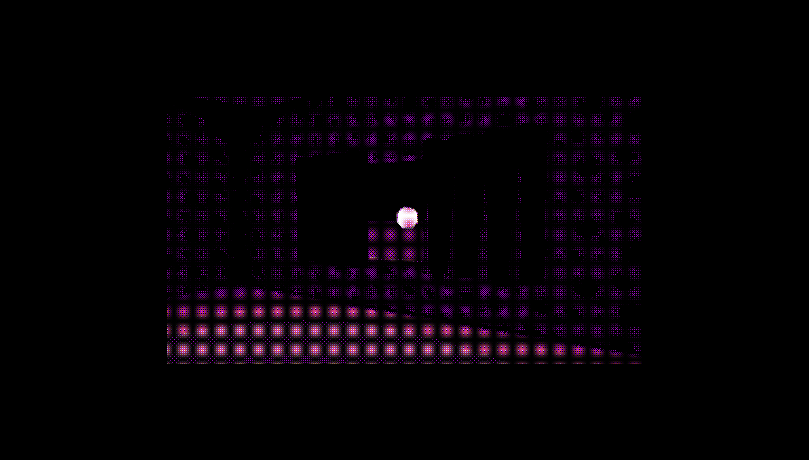

Bayer Matrix Dithering in GLSL for Use in a Horror Game
I’ve always wanted to replicate the beautiful dithering style used in the game Return of the Obra Dinn by Lucas Pope. I attempted to implement this type of 1 bit dithering in GLSL with limited experience with shaders, and I went down quite the rabbit hole.
If you don’t already know what dithering is:
Dithering is a method that is used to lessen color-banding in images by intentionally applying certain noise patterns. This technique had been around since the Apple II days and its use declined quickly as limited color palettes became a thing of the past.
Bayer Matrix Dithering
A Bayer Matrix is a treshold map used in ordered dithering which allows for a smooth transition from light to dark pixels.
The Bayer Matrix produces this nice looking crosshatch pattern and gives it the pixel-y look I was going for.
This is the main dithering technique used in Return of the Obra Dinn. You can read Lucas Pope’s full dithering process explanation here. It’s a really interesting read and shows the lengths a man will go for those sweet retro aesthetics.
Pope also uses blue noise dithering and some other neat tricks to make the dithering look nice and neat. However, I’m just focusing on the Bayer Matrix dithering for the sake of simplicity.
My Various Attempts
This happened a few months ago so I forget exactly how I approached the problem. But I remember starting with the DotScreenShader by alteredq that comes with the examples folder in the threejs repo.
After messing with that file for a while, I tried for days trying to get some kind of working shader code. I had some bouts of success as I converted some shadertoy code to work with ThreeJS to learn my way around some basic shaders. I began to understand some GLSL concepts. But I knew this would take a long time and a lot of trial and error.
A Happy Accident
After shelving the project for a while, I came across this repo containing just what I was after! I had been looking for dithering implementations similar to the style seen in Return of the Obra Dinn, but failed to find any until this one. I modified the code a bit to work with my project and voila!
Not trying to take any credit for the hard work by chadxhillary. I made sure it was cool with him that I use the code and he said feel free to. Big shout out to you chadxhillary.
One of the things I added to the code was a check to add a few more bits of color to the algorithm.
|
|
I also messed with the scaling a bit to get a more Macintosh Plus look, while still being able to discern things.
Implementation in my Game
While I do love the look of the 1-bit dithering, adding a few more bits does add a lot of possibilities for the game. I could switch levels and flip the whole color palette by changing a few variables, which would be super cool to try out.


This definitely does the trick in giving off a creepy feeling in-game. Something very not right about that bright and ominous sphere though. That probably adds to the creepy factor. But I digress.